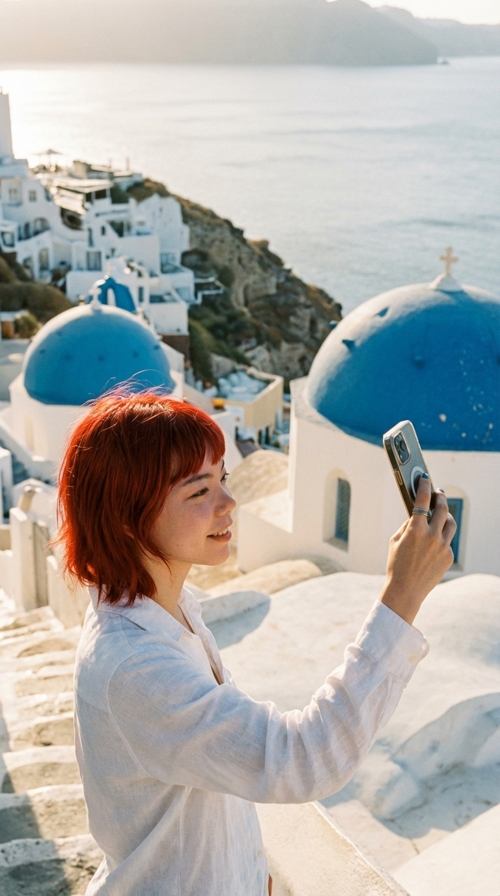

There's a moment in Santorini — right before the sun dips below the caldera — where the entire world holds its breath. The white-washed buildings blush pink, then gold, then a deep, impossible amber. And for a few seconds, time simply… stops.
I've chased sunsets on every continent, but nothing compares to watching the Aegean swallow the sun from the cliffs of Oia. Mimi Momo perched on my shoulder, whiskers twitching, as if she too understood the magic of the moment.
🎬 Greece Vlog
The Best Spots for Sunset
1. The Castle Ruins in Oia
The iconic spot. Yes, it's crowded — but for good reason. Arrive at least an hour early, bring a blanket, and claim your spot on the ancient walls. The view stretches across the entire caldera, and when the sun finally disappears, the crowd erupts in spontaneous applause. It never gets old.
2. Santo Wines Winery
For a more refined experience, book a tasting at Santo Wines. Sip Assyrtiko wine (Santorini's pride) while the sky performs its nightly masterpiece. The terrace offers an unobstructed panorama, and the wine makes everything taste like liquid gold.
3. Imerovigli — The Balcony of the Aegean
Less crowded than Oia but equally stunning. Walk to Skaros Rock for a slightly elevated perspective, or simply sit at any of the tiny cafés along the cliff path. This is where I had my most magical sunset moment — just me, Mimi Momo, and the vast painted sky.
"The sunset is proof that endings can be beautiful too." — A thought that came to me on day three, halfway through a glass of wine, watching the sky turn impossible colors.
Golden Hour Photography Tips
- Arrive early: The best light starts 45 minutes before sunset
- Face east too: The buildings catching the warm light are often more photogenic than the sun itself
- Stay after: The 20 minutes after sunset (blue hour) create the most dreamy, ethereal tones
- Bring a scarf: The wind picks up at sunset — and flowing fabric makes for gorgeous photos
A Wellness Moment
I turned my Santorini sunsets into a daily mindfulness practice. Each evening, I'd find my spot, close my eyes for three breaths, then open them to really see the colors. No phone for the first five minutes. Just presence.
It sounds simple, but after a week of this practice, something shifted inside me. The sunsets became less about capturing the perfect photo and more about feeling held by the beauty of the moment.
If you're ever feeling overwhelmed by the pace of travel (or life), try this. Find your sunset. Breathe. Let the colors wash over you. It's the simplest therapy in the world, and it's free. ✨